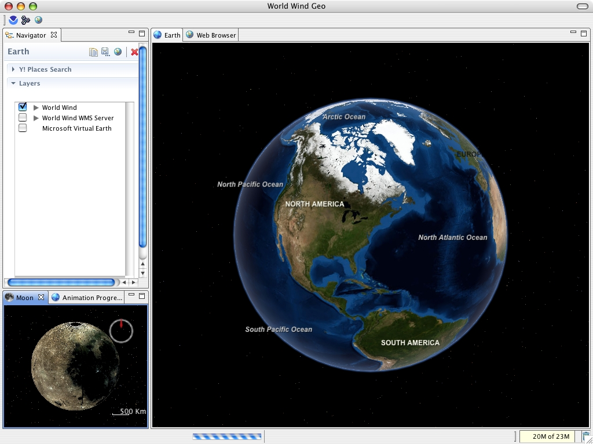

World
Wind Geo: Closing the gap between Science and GIS
This is the home page of World Wind Geo: The Eclipse Geo browser.
The Geospatial Web or Geoweb is a relatively new term that implies the
merging of geographical (location-based) information with the abstract
information that currently dominates the Internet. The World Wind Geo is
an experimental geo browser built on top of two of the best open source
technologies:
- World Wind Java SDK - http://worldwind.arc.nasa.gov/java/
: Allows developers to embed World Wind technology in their own
applications.
- Eclipse - http://www.eclipse.org/
: Eclipse is an open source community whose projects are focused on
building an open development platform comprised of extensible
frameworks, tools and runtimes.
The new version of our 3D globe is closing the gap between GIS
& SIS (Scientific Information Systems) by incorporating low/med/hi
resolution GIS datasets from multiple sources: NASA, MS Virtual Earth,
and others plus the great java NetCDF library for plotting/subsetting
capabilities of scientific data.
World Wind Geo has the following fetaures:
- Interactive 3D navigation.
- Full support for WMS 1.1.x and 1.3.x using wizards.
- Over 500 real time weather data sets from
NOAA and the Navy Research Labs.
- Limited support for KML: Ground overlays,
screen overlays, and placemarks only.
- Support for animated ground overlays to visualize
events over time.
- Scientific Data Plot/Subset capabilities with
NetCDF.
- Open source: built on top of the World Wind Java SDK and
Eclipse frameworks.
- Highly extensible: It uses the eclipse plugin framework to
extend the user interface.
- Multi platform: built on proven standards: Java and Eclipse.
Datasets
WW Geo bundles the following datasets and features:
NASA
http://www.worldwindcentral.com/wiki/World_Wind_Data_Sources
Microsoft
http://www.microsoft.com/virtualearth/
- Virtual Earth Roads.
- Virtual Earth Satellite.
- Virtual Earth Hybrid (Satellite with place names).
The NetCDF Viewer
NetCDF (network Common Data Form) is a set of software libraries
and machine-independent data formats that support the creation, access,
and sharing of array-oriented scientific data. http://www.unidata.ucar.edu/software/netcdf/
. WW Geo bundles a NetCDF viewer for the following conventions:
Others
- Full support for WMS 1.1.x layers and 1.3.x animated or static
layers.
- Limited KML support: Temporal/static Ground, Screen overlays
and placemarks.
Requirements
WW Geo Main GUI Screen
Shot
Here is a screen shot of the main user interface under Mac OSX. The earth,
and moon are shown, the earth displays a sea surface temperature
ground overlay obtained from a scientific NetCDF OpeNDAP dataset.

Keeping up to date!
You can keep WWGeo up to date using the eclipse update system:
- Under "Help", select "Software Updates/Find and
Install"
- Click "Search for new features to install", then
click next
- Click the "New Remote Site" button on the right and
enter the update information
- Click Finish, and follow the easy installation instructions.